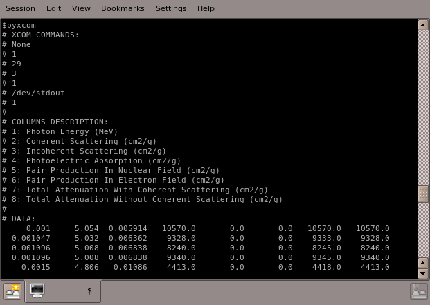
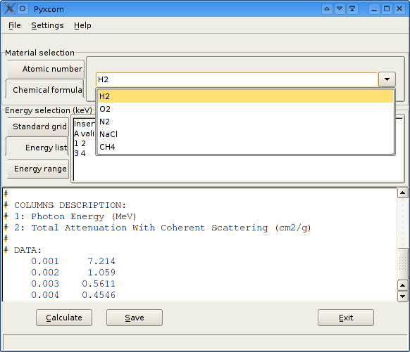

Ovviamente non potevano mancare le immagini di pyxcom in funzione!
Potete scegliere i dati da calcolare
... e poi salvarli.
 pyxcom a riga di comando.
 Potete accedere ai dati specificando la formula chimica...
... o il numero atomico.
Dalla versione 0.4 potete e' possibile controllare le informazioni restituite da pyxcom, configurare il percorso di installazione di XCOM, e anche usare la GUI per scaricare e installare XCOM dal sito del NIST.
Under constructionHere there are some screenshots of pyxcom.
You can choose the data you are interested too...
... and then you can save them.
pyxcom console output.
You can access material data at the specified energies providing the chemical formula...
... or the atomic number.
You can control the information supplied by pyxcom (features I added after the release of pyxcom-0.4), configure the installation path of xcom, and even use the GUI to download and install XCOM from the NIST site.